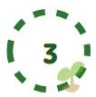
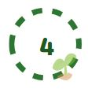
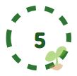

Language Skill
Language Skill
- language: python, c, c++, java
- 웹 프론트: html, css, javascript, react(now studying~)
- 앱 프론트: android(now more studying~)
- 백엔드:
- 기타:
 스터디 그룹
스터디 그룹
- 1학년 2학기:주식 스터디 참여 (관련 링크)
- 1학년 겨울 방학:웹프로그래밍 스터디 참여 (관련 링크)
- 2학년 1학기:자바와 데이터구조 스터디 참여 (관련 링크)
- 2학년 여름 방학~(+독학): 알고리즘 스터디 (관련 링크)
- 2학년 2학기: 서버운영 및 보안 스터디 참여, 안드로이드(코틀린) 스터디 참여, 웹 프론트 프레임워크(React) 스터디 참여
-  봉사 활동
- 2020 2학기 ~ ing _ 교내 it 리더십그룹: IT'S U (링크: IT'S U 홈페이지)
- 하는 일: 교내 IT 서비스 모니터링 및 시범 테스트, 자체 세미나 및 특강
- 맡은 일: 잇츠유의 디자인팀원으로 웹진 디자인 및 제작과 교내 IT 서비스 점검 및 확인 모니터링을 하고 있다.
- 2021 1학기_ 교내 코딩 봉사 학회: 컴코드
- 하는 일: IT공학과 학회 중 하나로, 숙명여자대학교 재학생을 대상으로 코딩 봉사를 한다.
- 맡은 일: 2021-1학기, python 기초에 대해 코딩 교육봉사를 진행하였다.
- 2021 코딩봉사 (관련 링크)
- 2021 2학기_ 교내 코딩 봉사 학회: 컴코드
- 하는 일: IT공학과 학회 중 하나로, 초/중학생 탈북 학생들의 코딩교육 코딩 봉사를 한다.
- 맡은 일: 2021-2학기, 스크래치 코딩 교육봉사를 진행하고 있다.
-  동아리/학회/대외 활동
- 2020.03 ~ 2020.12 학생회
- 2020.03 ~ 2020.07 풍물 동아리
- 2020.03 ~ 2020.12 멘토링 연합 동아리
- 2020.03 ~ ing it 리더십그룹(잇츠유)
- 2021.02 ~ 2021.08 영어 CNN 뉴스 동아리
- 2021.03 ~ ing 코딩 교육봉사 학회
- 2021.03 ~ ing 한국 장학재단 사회리더 멘토링
- 2021.09 ~ ing gdsc(google developer student clubs)
-  프로젝트
- ***2021 1학기***
- 1. 교내 IPS 대회 참여 (여행메이트, 여행정보 공유하는 커뮤니티 웹사이트 만드는 프로젝트를 진행하였다.)
(관련 링크)
- 2. 객체지향프로그래밍 수업 일환의 프로젝트 진행 (선택 어려움 겪는 사람을 위한 솔루션 프로그램 using java)
(관련 링크)
- ***2021 여름 방학***
- 1. 교내 MEIT 대회 참여 (공항 컨베이너벨트에 자신의 수하물 출하/수거 및 위치 알림 프로젝트를 진행하였다.)
meit 프로젝트_독학공부 (관련 링크)
meit 프로젝트_with sw (관련 링크)